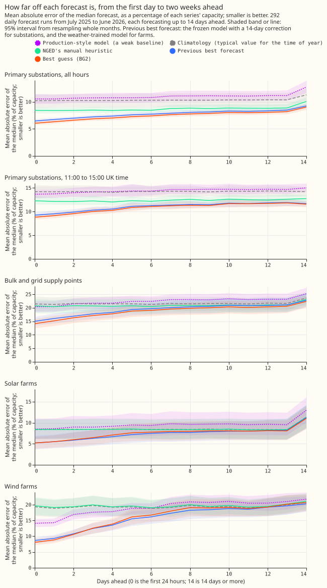
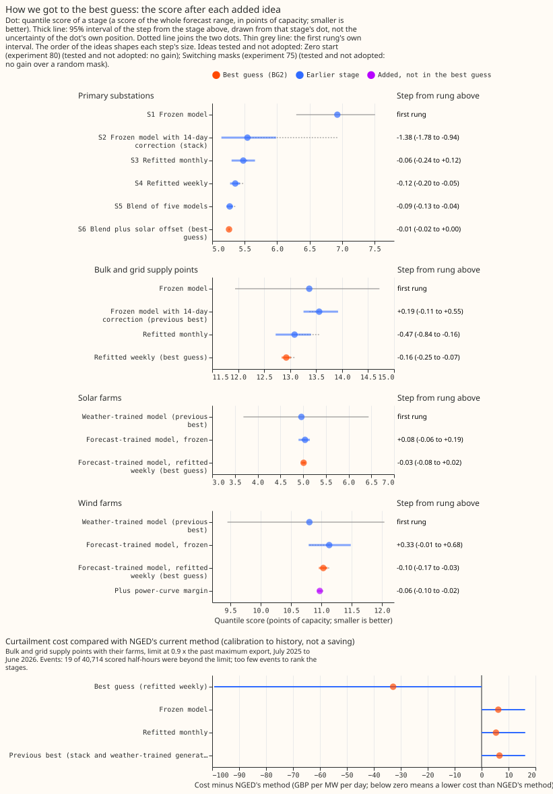
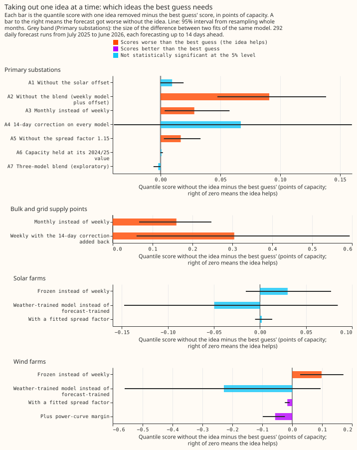
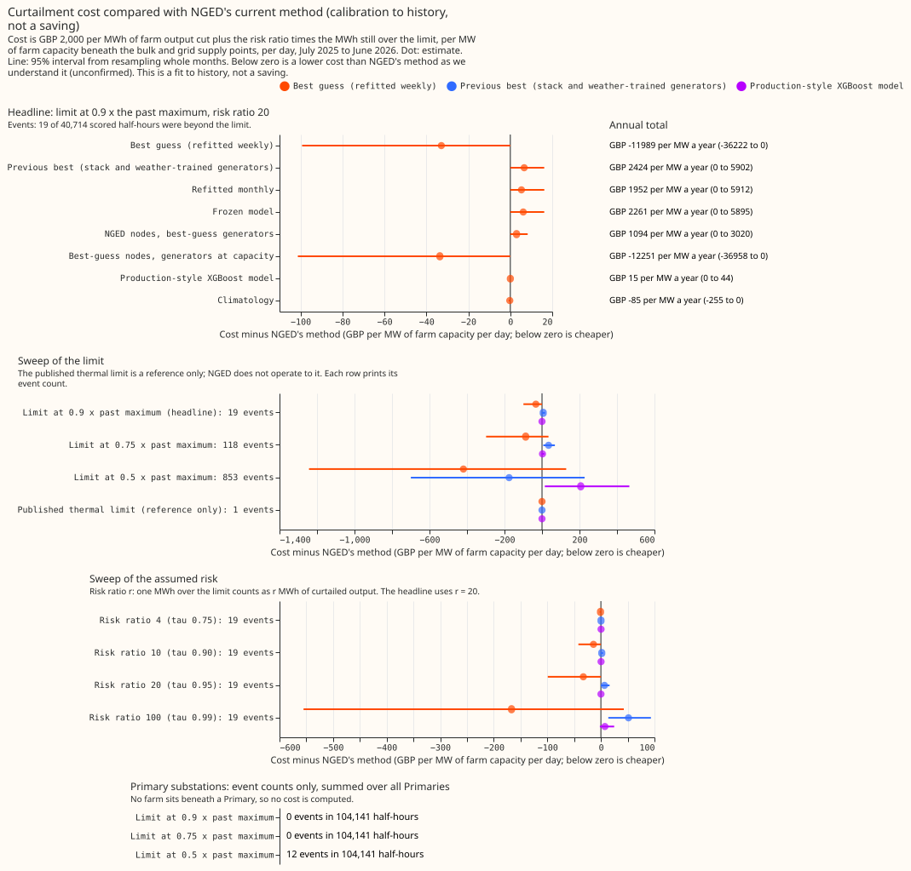

Experiment 87: BG2, the best guess so far and what each part contributes
Take-home message: weekly refitting and a blend of five models lower the forecast error at
Primary substations and at bulk and grid supply points, while the solar and wind farm forecasts are
still too close to call. A Primary substation steps 33 kV or 66 kV down to 11 kV. A bulk or grid
supply point is a substation where the transmission network feeds the distribution network. BG2 is
the second "best guess" recipe, assembled from the ideas that scored best in earlier experiments.
The score is the quantile score, which is twice the mean pinball loss over 11 quantiles, in points
of capacity; one point is 1% of a series' capacity, and a lower score is better. At the 16 Primary
substations BG2 scores 5.260, against 5.543 for the previous best, the stack: an XGBoost model
trained once, with a correction from the last 14 days of errors. At the 4 supply points BG2 scores
12.925, against 13.559 for the stack. The solar offset (the forecast output of the unmetered solar
panels behind the substation, experiments 64 and 78) lowers the score by 0.114 points (0.075 to
0.164) on the rows it can touch: daylight from April to September at the 5 Primaries that carry
an offset, 8.5% of the Primary rows. The point value is inside the prediction of 0.10 to 0.15.
Averaged over all rows of all 16 Primaries the gain dilutes to 0.010.
For the solar and wind farms, training on the archived
ECMWF ensemble forecasts scored 0.050 and 0.228 points worse than experiment 33's mixture trained
on ERA5 weather. With 6 solar and 3 wind farms the experiment cannot tell whether the loss is under
the 0.10 (solar) or 0.30 (wind) points we would accept. The verdict is partly supported.
We asked whether the ideas that scored best in earlier experiments still work when they are
combined in one forecast, and which idea gives which part of the gain. We refitted each XGBoost
model weekly or monthly, as its idea requires, forecast 292 daily runs from July 2025 to June 2026,
and scored each target class against its previous best forecast and against NGED's
manual_heuristic. Each drop-one ablation removes one idea at a time from the best guess and
scores the result again. Solar and wind farms are anonymised in every figure.




The other figures are in this folder: the stages and ablations as lines (figure_2_*), error by
lead band, hour, month, season, and sunshine (figure_5_*), error by series
(figure_6_by_series), tail calibration (figure_7*), and the side panels of experiments 81 and
54 (figure_9_side_panels). In the figures and below, S1 to S6 are the stages of the Primary
staircase (frozen, stack, monthly, weekly, blend, and blend plus offset). A2 to A7 are drop-one
ablations of BG2: no blend, monthly in the weekly slot, the correction on every member, no spread
factor, capacity held at its value before the validation year, and three members. The spread factor
widens or narrows the quantiles about the median. Experiment 81 (R11) is a replication on other
forecast runs.
Results
Scores are quantile scores in points of capacity on the 292 runs, with 95% intervals from resampling whole months. Negative differences mean BG2 scores lower, which is better.
- BG2 beats the stack at the 16 Primary substations by 0.283 points. BG2 scores 5.260 (4.987 to
5.534). The verdict contrast is -0.283 (98.75% interval -0.425 to -0.146), supported. Against
manual_heuristicthe difference is -0.920 (-1.078 to -0.767). The mean absolute error of the median is 7.432 (7.063 to 7.814), against 8.695 formanual_heuristic. - BG2 beats the stack at the 4 supply points by 0.634 points. BG2 scores 12.925 (11.569 to
14.177). The contrast is -0.634 (-1.111 to -0.279), supported. The stack is the frozen XGBoost
model with the 14-day correction. Against
manual_heuristicthe difference is -1.578 (-1.951 to -1.251). The mean absolute error is 18.666 (16.484 to 20.682), against 20.876. - The solar farm forecast is 0.050 points worse than the ERA5-trained mixture, but the interval
includes no change. BG2 scores 5.012 (3.788 to 6.392) against 4.962; the contrast is +0.050
(-0.125 to +0.168). The upper end exceeds the +0.10 margin, so non-inferiority is not shown.
Against
manual_heuristicthe difference is -0.703 (-0.966 to -0.474). The mean absolute error is 7.444 (5.610 to 9.510), against 8.533. - The wind farm forecast is 0.228 points worse, with a wide interval. BG2 scores 11.032 (9.641
to 12.303) against 10.804; the contrast is +0.228 (-0.178 to +0.653), and non-inferiority within
0.30 is not shown. Against
manual_heuristicthe difference is -2.871 (-3.568 to -2.234). The mean absolute error is 15.915 (13.745 to 17.895), against 19.607. The power-curve margin lowers the wind score by 0.057 (0.024 to 0.098) against BG2, and the fitted spread factor lowers it by 0.016 (0.009 to 0.025). - Weekly refitting and the blend produce the Primary gain. The staircase scores are: frozen 6.927; the stack lowers the score by 1.384 (0.943 to 1.785); monthly refitting by 0.065 (-0.117 to 0.244); weekly refitting by 0.123 (0.051 to 0.202); the blend by 0.086 (0.038 to 0.135); the offset by 0.010 (0.000 to 0.019), which is the all-row dilution of 0.114 (0.075 to 0.164) on the rows the offset can touch. The ablation that removes the blend from the final blend raises the score by 0.091 (0.048 to 0.138), which differs from the staircase step because the two remove the blend from different forecasts.
- Other ablations. At the supply points, adding the 14-day correction raises the score by 0.305 (0.060 to 0.594) and moving from weekly to monthly refitting by 0.160 (0.066 to 0.247). At Primaries, monthly in the weekly slot raises it by 0.028 (0.003 to 0.058), the correction on every member by 0.067 (-0.039 to 0.160), no spread factor by 0.017 (0.003 to 0.033), and capacity held by 0.001 (0.000 to 0.002). The three-member blend is 0.002 below BG2 (-0.006 to 0.000), so the experiment found no difference between three and five members.
- Solar and wind ablations. Refitting monthly instead of freezing the ensemble-trained model lowers the score by 0.030 (-0.015 to 0.077) at solar farms and 0.098 (0.027 to 0.171) at wind farms. Swapping in the ERA5-trained mixture changes the score by -0.050 (-0.148 to +0.085) at solar farms and -0.228 (-0.560 to +0.095) at wind farms.
- The noise floor is 0.001 points. A repeat fit of the monthly Primary model at 4 Primaries moved the score by -0.001 (-0.003 to +0.001).
- The check on the 73 runs of
fold_a_every5d_v1is not independent. The blend and the offset were chosen on those runs. BG2 minus the previous best is -0.285 (-0.402 to -0.171) at Primaries, -0.652 (-1.057 to -0.332) at supply points, +0.037 (-0.093 to +0.149) at solar farms, and +0.323 (-0.042 to +0.736) at wind farms.
| BG2 tail check | Quantile | Primary | Supply points | Solar farms | Wind farms |
|---|---|---|---|---|---|
| Share of actuals below the quantile (95% interval) | 0.01 | 0.007 (0.004 to 0.010) | 0.004 (0.002 to 0.005) | 0.007 (0.004 to 0.010) | 0.003 (0.001 to 0.006) |
| 0.05 | 0.042 (0.033 to 0.051) | 0.039 (0.031 to 0.050) | 0.028 (0.022 to 0.035) | 0.038 (0.029 to 0.047) | |
| 0.95 | 0.937 (0.913 to 0.955) | 0.944 (0.911 to 0.965) | 0.973 (0.964 to 0.979) | 0.951 (0.935 to 0.966) | |
| 0.99 | 0.986 (0.978 to 0.993) | 0.995 (0.992 to 0.998) | 0.997 (0.995 to 0.999) | 0.987 (0.981 to 0.993) | |
| Pinball loss | 0.01 / 0.05 | 0.280 / 0.901 | 0.731 / 2.389 | 0.180 / 0.782 | 0.270 / 1.267 |
| 0.95 / 0.99 | 1.206 / 0.414 | 2.403 / 0.594 | 0.934 / 0.547 | 2.709 / 0.698 | |
| Threshold-weighted CRPS | above p99 / above p95 / below p05 | 0.119 / 0.779 / 0.251 | 0.276 / 0.967 / 0.666 | 0.041 / 0.510 / 0.008 | 0.019 / 0.361 / 0.004 |
- The Primary tails match their nominal levels, and the other classes' tails are mostly too wide. At Primaries every interval includes its nominal level. At supply points the 0.01 and 0.99 quantiles cover 0.004 and 0.995 of the actuals, and at wind farms the 0.01 quantile covers 0.003, so those bands are slightly wide. At solar farms the 0.05, 0.95, and 0.99 quantiles cover 0.028, 0.973, and 0.997, so the bands are too wide.
- Curtailment cost is a calibration to history, not a saving. Curtailment cost is the cost in
GBP per MW of generator capacity per day under node limits set at 0.9 times the highest export
seen before the scored year. The 3 scored supply points saw 19 export half-hours beyond that
limit out of 40,714 scored half-hours, too few to rank forecasts. A fourth supply point (Walpole)
is excluded because the sign of its flow is unknown. NGED's method is the maintainer's unconfirmed
understanding of it: every generator assumed to run at capacity. The assumed risk level is a
breach ratio r of 20 (planning to the 0.95 quantile).
- Headline, f = 0.9 and r = 20: BG2 minus NGED's method is -32.85 GBP per MW per day (-99.24 to +0.00), or -11,989 GBP per MW per year pro-rated from 292 days, not statistically significant at the 5% level. The previous best is +6.64 and the perfect forecast -57.39.
- Risk level: r = 4, 10, and 100 give -0.81, -13.87, and -166.89 GBP per MW per day.
- Limit: f = 0.75 gives -87.03 (-298.28 to +34.62) with 118 events, and f = 0.5 gives -418.99 (-1242.54 to +129.46) with 853 events. The published thermal limit has 1 event and is a reference only.
- Primaries (node only): 0 events at f = 0.9 and 0.75, and 12 at f = 0.5, among 104,141 half-hours of the 6 scored series.
Deviations, caveats, and next steps
- The generator rows refit monthly. The planned weekly refits of each of the 9 farm models did
not fit the 16 GPU-hour budget, which the manager raised to 20. The arms
g_ens_weeklyandg_a_weekly_to_frozenin the stored predictions are monthly refits. The hypothesis above described weekly refits at the farms. The noise-floor repeat used the monthly schedule too. Total GPU use was 14.4 hours of wall time. - Schedule for the rest: the full production recipe, with 500 rounds, a learning rate of 0.05, and a half-life of 0.5 years. Primary and supply-point models refit weekly.
- The offset follows experiment 74's mechanism, not the design's. The weights come from experiment 64's fit before the validation year, where the design says to refit them. The capacity per run comes from experiment 78's vintages, and the offset models start from the median of the training labels plus the offset. Ablation A6 holds the capacity at experiment 64's value, which was estimated before July 2025. The offset lowers the score by 0.114 on its daylight April-to-September rows at the 5 offset Primaries (0.010 over all rows of all 16 Primaries). Nothing dilutes or cancels the effect: the base margin, blend weights, gate, and member twins are the same in training and prediction. Using the held capacity at prediction instead of the vintage capacity gives 0.105 (ablation A6), so the vintage capacity helps slightly. The spread factor is a fixed 1.15 around the median and the 14-day correction uses the stack member's own errors, so neither carries a replica-year bias into the offset.
- The pooled member refits monthly on the full history with 500 rounds, not under P-roll (the rolling-window schedule of experiment 49).
- References:
climatologyandmanual_heuristicare recomputed at 11 levels. The production-style row is the storedxgboost_baselinefrom the localdata/power_forecaststable. Whether the local Dagster cross-validation assets wrote it, and not S3, was not confirmed. Its band is too narrow, so its tail scores are noise. - Ablation A3 replaces the weekly member with the monthly one, so the blend holds a duplicate. Ablation A7 (three members) is exploratory and not in the best guess.
- Selection bias: the spread factor 1.15, the blend scheme, the offset gate, and the half-life were chosen or scored on this validation year, so the Primary and supply-point gains are optimistic.
- Not run: corrected lags, analogues on top of the offset, pooling by type on cleaned targets, and any UKV, ICON-EU, or IFS blend. The side panels of figure 9 repeat numbers from experiments 81 and 54, labelled control-only and "ceiling, not available live".
- Next: a second validation year for the offset, and more farms or a second year to rank the farm models. The solar bands need recalibration, because the tail check shows them too wide; the other classes' tails need no tail-specific spread factor on this evidence.